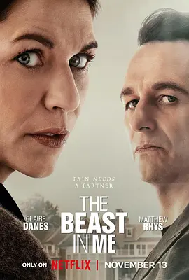

7.4
兽藏我心
The Beast in Me
2025
美国
评分 7.4
导演:
安东尼奥·坎波斯
演员:
克莱尔·丹尼斯 / 马修·瑞斯 / 布里特妮·斯诺 / 娜塔丽·莫瑞丝 / 大卫·莱昂斯
类型:
悬疑,惊悚,犯罪
剧情简介
在纽约长岛的郊区，畅销作家艾吉·威格斯陷入创作与生活的双重崩塌：儿子数年前的交通事故令她无从释怀，她与妻子分离，余生似乎只剩一幢日渐破败的老屋与无法动笔的痛苦。某日，新搬来的邻居奈尔·贾维斯，一个外表温文、背景神秘的房地产继承人，与他的新妻子共同入驻隔壁。当奈尔提出让艾吉为他写传记式的新书，以交换社区绿色步道的使用权，一场微妙的博弈缓缓拉开帷幕。艾吉从怀疑、迷恋到深陷危险，她察觉出这个邻居背后可能隐藏更为复杂的真相——关于妻子的失踪、关于金钱与特权、关于个人欲望如何蜕变为掌控。随着艾吉不断探究，镜头中交错着她夜晚独自走在自家庭院，回忆触发的泪光；也有奈尔在私人宴会上微笑的镜头，但笑意背后却隐含冷峻。两人如同猎人与猎物，又像互为镜像，在权力、复仇、救赎间旋转。越接近真相，生活日益失序，他们逐渐发现：自己或许不仅是在对方的阴影中，还在面对那一头深藏的“野兽”。每一个场景都暗示着，真正的危险并非别人的恶行，而是我们心底那一点点被压抑、被误解、被触发的黑暗。